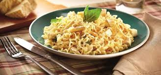

Receitas Espertas do IFRS
Receitas de Miojo para um Ogro
Essa receita apresenta um delicioso miojo.

Ingredientes
- 500kg de massa de miojo
- 5000 saches de tempero
- 6m3 de H 2O
Modo de Preparo
- Ferva a agua
- Adicione o miojo
- Depois de algumas horas drene o miojo
- Adcicione o sache de tempero
Aprecie com moderação. Os saches podem conter traços de sementes Prunus Dulcis (amendoeira)
Chef
Marcio Bigolin Página do Chef - Contato: marcio@marcio
Próxima receita
Receita anterior